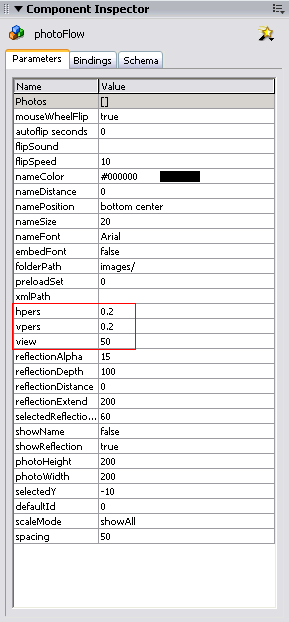
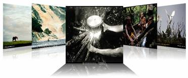
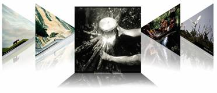
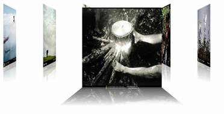
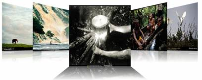

view with value of 0
You can change the perspective of the images by setting the following 3 parameters in the Component Inspector:
hpers: available range from 0.1 ~ 0.9
vpers: available range from 0.1 ~ 0.9
view: available range from 0 ~ 100


hpers with value of 0.2
vpers with value of 0.2

hpers with value of 1.

vpers with value of 0.8
view with value of 0

view with value of 90